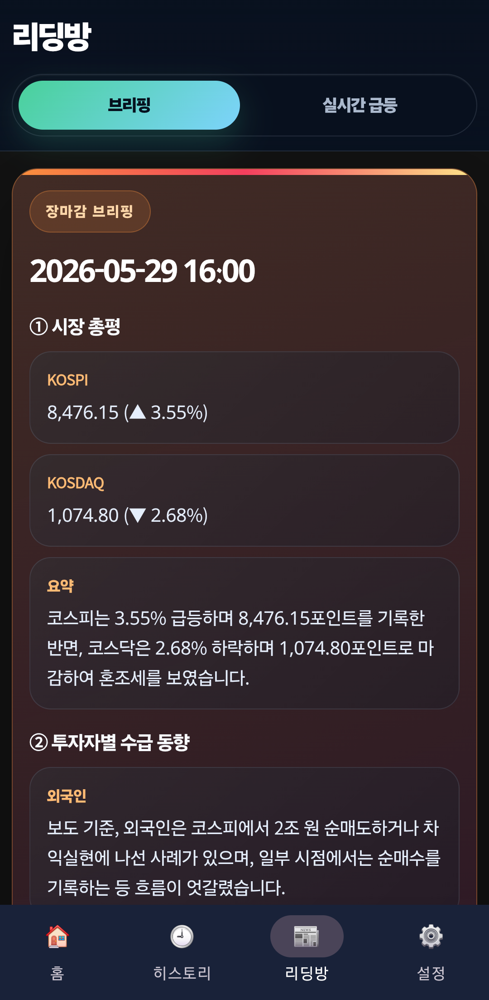

Android
주식 매도신호등
장 시작 전 일곱 가지 위험 지표를 신호등 색으로 간결하게 요약합니다.



장 시작 전 한눈에 보는 신호
장 시작 전 미국 주식과 나스닥의 위험도를 빠르게 확인하고 싶은 사람을 위한 투자 참고 앱입니다. 안정·경계·위험 신호로 오늘장 확인 순서를 단순하게 만듭니다.
오늘장과 지표 흐름을 나누어 보기
오늘장 통합 신호와 핵심 지표 기반 히스토리를 나누어 볼 수 있어, 한 번의 표시보다 흐름을 함께 살펴볼 수 있습니다.
- 안정·경계·위험 통합 신호
- 오늘장 신호 요약
- 핵심 지표 히스토리 확인
- 오전 9시 알림으로 체크 루틴 관리
매일 오전 9시 알림으로 확인 루틴을 관리하고, 장이 시작되기 전에 오늘의 신호와 핵심 지표 흐름을 먼저 살펴보는 방식입니다.
이런 사용자에게 맞습니다
시장 열리기 전에 복잡한 수치보다 간결한 위험도 신호를 먼저 확인하고 싶은 사용자에게 맞습니다. 투자 결정을 대신하기보다 확인할 기준을 정리하는 앱입니다.